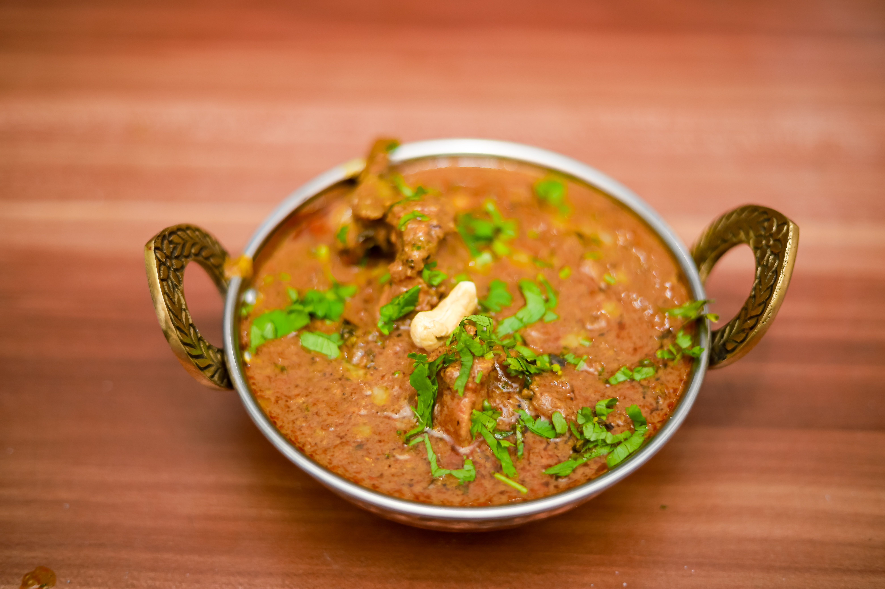

My Blogs
Paneer Korma
Photo by Yubraj Timsina on
Unsplash
Ingredients:
- 300g potato, chopped small
- 200g paneer, diced
- 1 Onion, diced
- 2 garlic cloves, minced
- 2 tsp curry powder
- 1 tsp ground cumin
- 1 tsp salt
- 1/4 tsp black pepper
- 1 cup water
- Fresh cilantro, chopped (optional)
Instructions:
- Heat the cooking oil in a large skillet or saucepan over medium heat.
- Add the diced onion and minced garlic to the skillet, and cook, stirring frequently, until softened, about 2-3 minutes.
- Add the cubed potatoes to the skillet and stir to combine them with the onion and garlic mixture.
- Add the curry powder, ground cumin, salt, and black pepper to the skillet and stir to coat the potatoes evenly.
- Pour in the water, stir, and cover the skillet with a lid. Reduce the heat to low and let the potatoes simmer in the curry sauce for 20-25 minutes, or until they are tender and cooked through.
- Once the potatoes are cooked, remove the skillet from the heat and let it cool for a minute or two.
- Garnish the curry with fresh chopped cilantro, if desired.
- Serve the potato curry hot with rice or naan bread.